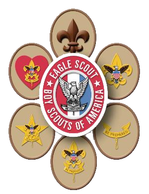

For Scouts
Information
Merit Badge
Merit Badge Counselors
- You can login to view a list of various merit badge counselors in the Dan Beard Council. Because this list includes addresses and phone numbers it requires you to login to the interface prior to viewing. To receive the credentials, please email the webmaster and we'd be happy to share login credentials with Troop 128 members.
- This list is updated by the Dan Beard Council and may change often so check back regularly prior to contacting a counselor.
- Dan Beard site
Fundraising
- Flower Sale (Early Spring)
- Boy Scout Popcorn (August-November)
- Recycling
For Adults
Forms
Information
Useful Resources
Become a Merit Badge Counselor
- We would highly encourage each of our parents to become a counselor for at least 1 of the merit badges that fall within your vocation, education, employment, hobby or just a love of the area of study. The requirements and time commitment is not significant and you can help our youth learn about a specific field of study and increase their knowledge while impacting their personal growth.
- You can be a Merit Badge Counselor for as many fields of study as you desire. You can also indicate to the council whether you're available as a counselor for any youth or just those youth within our troop or district.
- Click Here for a good overview of being a Merit Badge Counselor. Click Here for a list of current Merit Badges
- Feel free to ask any troop committee member if you have questions or concerns on how to get started.

Contact Us
Email us @ webmaster@troop128.net
Troop Meetings are most Monday nights at 7 PM at 541 Main St, Milford, OH 45150